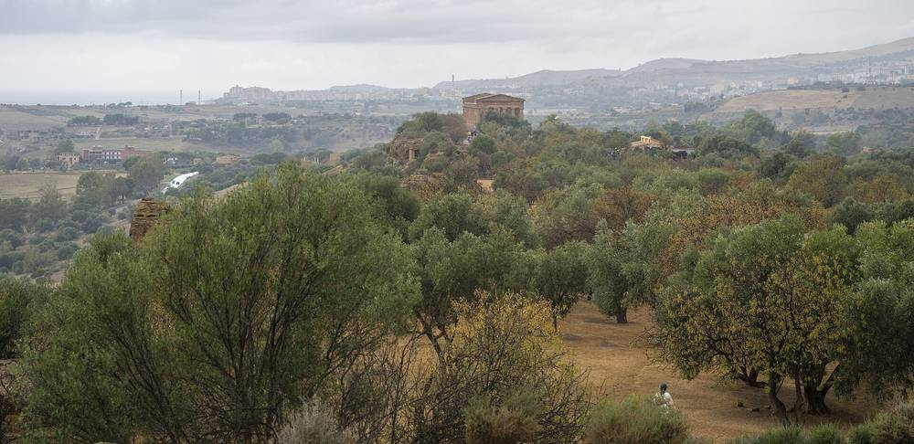

이탈리아 아그리젠토, 작은 섬 100% 재생에너지 모델 처음 도시에 들인다…2045년 목표로 재단과 협약

그리닝 더 아일랜드 재단과 양해각서, 시가 시민·공동주택·기업의 재생에너지 생산을 돕는 가속자로…허가·문화재 제약·초기 비용 장벽부터 조사하고 에너지공동체 방식도 검토
이탈리아 시칠리아의 아그리젠토시가 작은 섬들에서 다듬어 온 재생에너지 100% 전환 모델을 처음으로 도시에 들여오기로 하고, 11월 4일 비영리 재단 '그리닝 더 아일랜드(Greening the Islands Foundation)'와 양해각서에 서명했다. 시의회 승인을 먼저 거친 이 협약으로 아그리젠토는 재단의 'GTI 100% RES Islands' 프로그램의 첫 도시 실험지가 되며, 2045년까지 재생에너지 100%를 목표로 삼는다. 시는 시민·공동주택·기업이 재생에너지를 경제적으로 만들어 쓸 수 있도록 허가·규제·초기 비용·금융의 걸림돌을 찾아 풀고 시민과 기업, 기관, 사업자를 잇는 '가속자' 역할을 맡겠다는 계획이다. 재단은 공공건물과 주택, 공동주택, 생산시설 지붕 가운데 태양광을 올릴 수 있는 곳을 조사하고, 에너지공동체를 포함한 참여·이익 공유 방식과 금융 수단도 분석한다. 고대 유적이 많은 도시인 만큼 보호 기준을 낮추지 않으면서 허가 절차를 단순하게 할 방안도 문화재 당국과 함께 따로 살핀다. 재단 설립자 잔니 키아네타는 최근의 에너지 위기가 지역 단위 에너지 자립의 필요를 앞당겼다고 말했다.
시민에너지 관점
발표회에서 재생에너지 업계·환경단체 협의체 FREE의 아틸리오 피아텔리 회장은 아그리젠토 약 2만5,000가구가 코로나19 이전 한 해 가구당 약 3,000유로를 에너지·교통 등에 써 해마다 약 7,500만 유로가 지역 밖으로 빠져나간다고 추산했는데, 이는 에너지 전환이 환경 문제이기 전에 지역 경제 문제라는 점을 보여 준다. 유적 도시에 태양광을 깔면 경관을 해친다는 우려가 따르지만, 이 협약은 보호 기준을 지키면서 절차를 정비하는 길을 택했다. 다만 아직 협약 단계여서 누가 설비를 소유할지는 정해지지 않았고, 빠져나가던 돈을 지역에 붙잡아 두려면 시민과 공동주택이 설비의 주인이 되는 에너지공동체가 중심에 서야 한다. 국내 지자체도 직접 사업자가 되는 데 그치지 않고 주민 발전의 걸림돌을 걷어 내는 가속자 역할을 맡을 수 있다.
출처: Teleacras 2026-11-05 Angelo Ruoppolo 원문 보기
イタリア・アグリジェント、小さな島の再エネ100%モデルを初めて都市に導入…2045年目標で財団と協定
グリーニング・ザ・アイランズ財団と覚書、市が市民・集合住宅・企業の再エネ生産を後押しする「加速役」に…許認可・文化財規制・初期費用の壁から調査し、エネルギー共同体方式も検討
イタリア・シチリア島のアグリジェント市は、小さな島々で磨かれてきた再生可能エネルギー100%への移行モデルを初めて都市に導入することを決め、11月4日に非営利の「グリーニング・ザ・アイランズ財団」と覚書に署名した。市議会の承認を先に得たこの協定により、アグリジェントは財団の「GTI 100% RES Islands」プログラムの初の都市実験地となり、2045年までに再生可能エネルギー100%を目指す。市は、市民や集合住宅、企業が再生可能エネルギーを経済的に生産・利用できるよう、許認可・規制・初期費用・金融の障壁を洗い出して解消し、市民や企業、機関、事業者をつなぐ「加速役」を担う計画だ。財団は公共建築物や住宅、集合住宅、生産施設の屋根のうち太陽光を載せられる場所を調べ、エネルギー共同体を含む参加・利益共有の方法や金融手段も分析する。古代遺跡の多い都市であることから、保護基準を下げずに許認可手続きを簡素化する方策も文化財当局と別途検討する。財団創設者のジャンニ・キアネッタ氏は、最近のエネルギー危機が地域レベルでのエネルギー自立の必要性を早めたと語った。
市民エネルギーの視点
発表会で、再生可能エネルギー業界と環境団体の協議体FREEのアッティリオ・ピアッテッリ会長は、アグリジェントの約2万5,000世帯がコロナ禍前、1世帯あたり年約3,000ユーロをエネルギーや交通などに使い、毎年約7,500万ユーロが地域の外へ流れ出ていると試算したが、これはエネルギー転換が環境問題である前に地域経済の問題であることを示している。遺跡の町に太陽光を広げれば景観を損なうとの懸念はつきまとうが、この協定は保護基準を守りながら手続きを整える道を選んだ。ただしまだ協定の段階で、誰が設備を所有するかは決まっておらず、流出していたお金を地域にとどめるには、市民や集合住宅が設備の持ち主となるエネルギー共同体が中心に立つ必要がある。韓国の自治体も、自ら事業者になるだけでなく、住民による発電の障壁を取り除く加速役を担うことができる。
出典: Teleacras 2026-11-05 Angelo Ruoppolo 原文を読む
意大利阿格里真托首次把小岛100%可再生能源模式引入城市…与基金会签约，目标2045年
与"绿化岛屿"基金会签署谅解备忘录，市政府充当推动市民、公寓楼和企业生产可再生能源的"加速器"…先调查审批、文物限制和初期成本障碍，并研究能源社区模式
意大利西西里岛阿格里真托市决定首次把在小岛上打磨成熟的100%可再生能源转型模式引入城市，并于11月4日与非营利机构"绿化岛屿基金会"（Greening the Islands Foundation）签署谅解备忘录。该协议已先获市议会批准，阿格里真托由此成为基金会"GTI 100% RES Islands"项目的首个城市试验地，目标是到2045年实现100%可再生能源。市政府计划找出并消除审批、管制、初期成本和融资方面的障碍，让市民、公寓楼和企业能够经济地生产和使用可再生能源，并充当连接市民、企业、机构和运营商的"加速器"。基金会将调查公共建筑、住宅、公寓楼和生产设施屋顶中可安装光伏的地方，并分析包括能源社区在内的参与和收益共享方式以及金融工具。由于城内古代遗迹众多，还将与文物主管部门一起专门研究如何在不降低保护标准的前提下简化审批程序。基金会创始人詹尼·基亚内塔表示，最近的能源危机加快了地方层面实现能源自主的必要性。
市民能源视角
在发布会上，可再生能源行业与环保团体联合组织FREE的主席阿蒂利奥·皮亚泰利估算，阿格里真托约2万5,000户家庭在新冠疫情前每户每年在能源、交通等方面支出约3,000欧元，每年约有7,500万欧元流出本地，这说明能源转型首先是地方经济问题，其次才是环境问题。有人担心在遗迹之城铺设光伏会破坏景观，但这项协议选择了在坚守保护标准的同时理顺程序。不过目前仍处于协议阶段，设施由谁拥有尚未确定；要把外流的钱留在本地，就必须以市民和公寓楼成为设施主人的能源社区为核心。韩国地方政府也不必只当项目业主，可以担当为居民发电扫清障碍的加速器。
来源: Teleacras 2026-11-05 Angelo Ruoppolo 查看原文
Agrigento becomes the first city to adopt the 100% renewable model developed on small islands, signing an agreement with a 2045 target
Under a memorandum with the Greening the Islands Foundation, the Sicilian city will act as an accelerator for renewable generation by residents, apartment buildings and businesses, starting by mapping permit, heritage and upfront-cost barriers and examining energy communities
The city of Agrigento in Sicily, Italy, has decided to bring to an urban setting for the first time a 100% renewable energy transition model refined on small islands, signing a memorandum of understanding with the non-profit Greening the Islands Foundation on 4 November. Under the agreement, already approved by the city council, Agrigento becomes the first urban laboratory of the foundation's GTI 100% RES Islands programme, with a goal of 100% renewable energy by 2045. The city plans to act as an accelerator, identifying and removing permit, regulatory, upfront-cost and financing barriers so that residents, apartment buildings and businesses can produce and use renewable energy economically, and connecting citizens, companies, institutions and operators. The foundation will map roofs on public buildings, homes, apartment blocks and production sites that could host solar panels and analyse forms of participation and benefit-sharing, including energy communities, as well as financial tools. Because the city is rich in ancient sites, it will also work with the heritage authorities on ways to simplify permitting without lowering protection standards. Foundation founder Gianni Chianetta said the current energy crisis had accelerated the need for local energy autonomy.
Citizen Energy View
At the presentation, Attilio Piattelli, president of FREE, a coalition of renewable industry associations and environmental groups, estimated that Agrigento's roughly 25,000 households each spent about 3,000 euros a year on energy, transport and other costs before the pandemic, meaning around 75 million euros left the area every year, which shows that the energy transition is a local economic issue before it is an environmental one. There are worries that spreading solar across a city of ancient monuments will spoil the landscape, but this agreement has chosen to streamline procedures while keeping protection standards. The deal is still only an agreement, however, and who will own the equipment has not been decided; keeping that outflow of money at home requires energy communities in which residents and apartment buildings own the equipment to be at the centre. Korean local governments, too, can do more than act as developers themselves and take on the role of accelerator, clearing the obstacles to resident-owned generation.
Source: Teleacras 2026-11-05 Angelo Ruoppolo Read the original